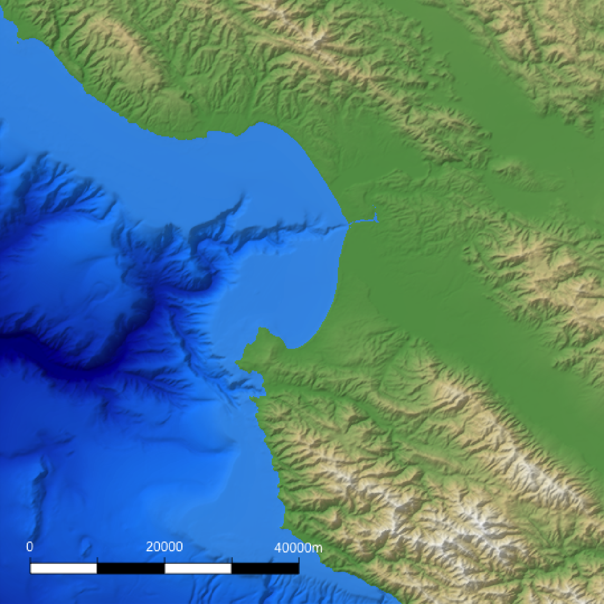
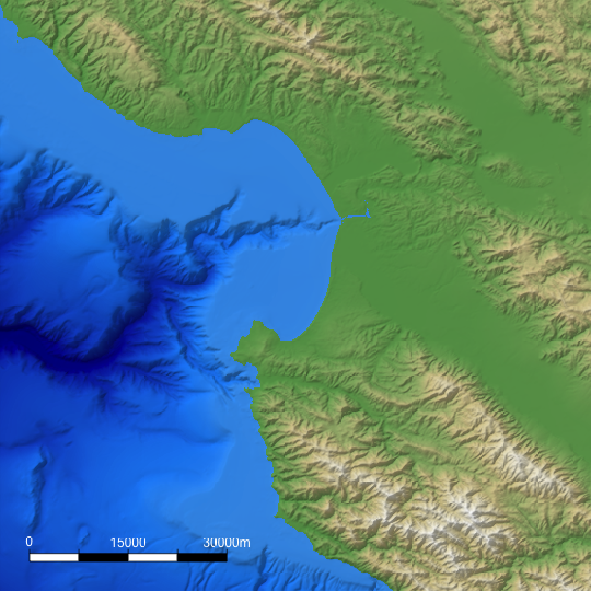
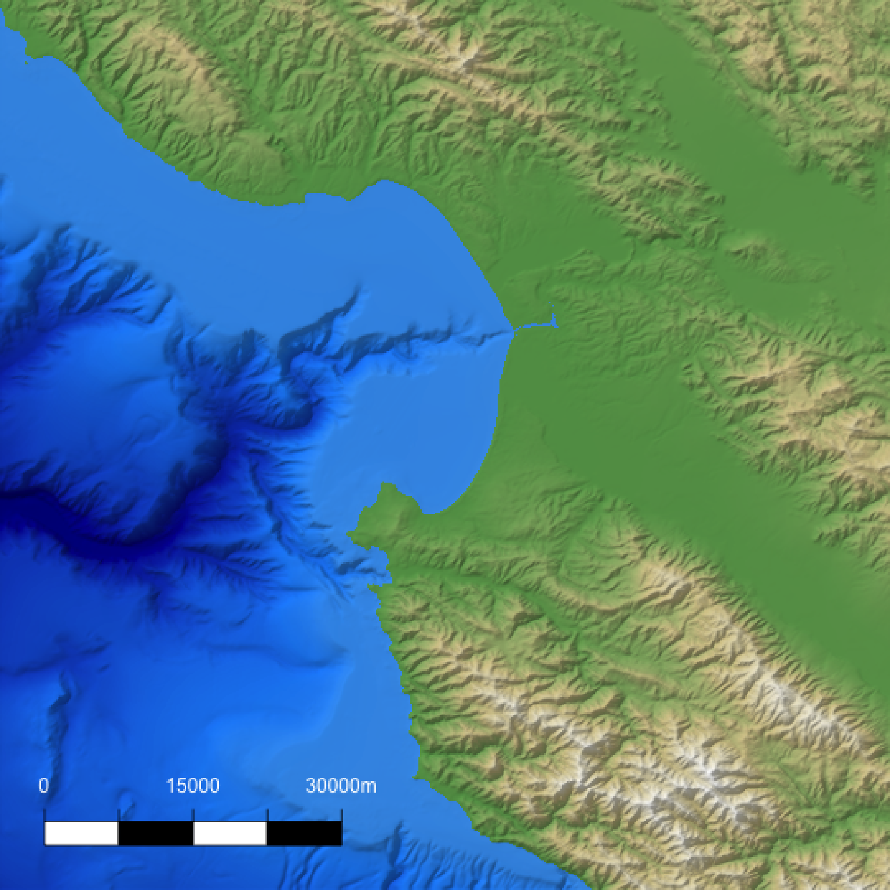
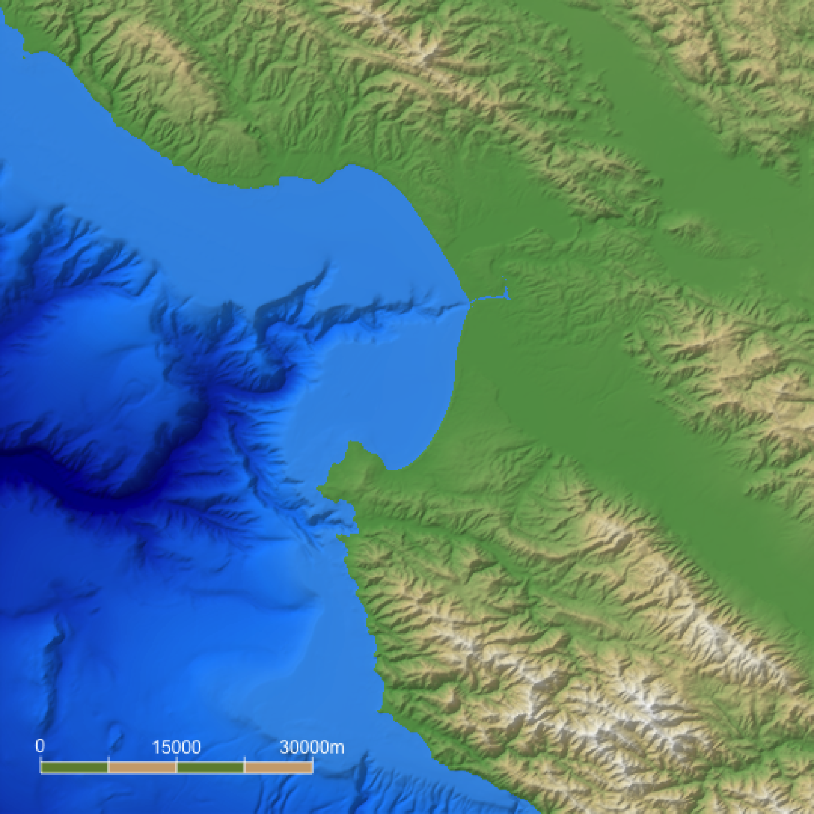
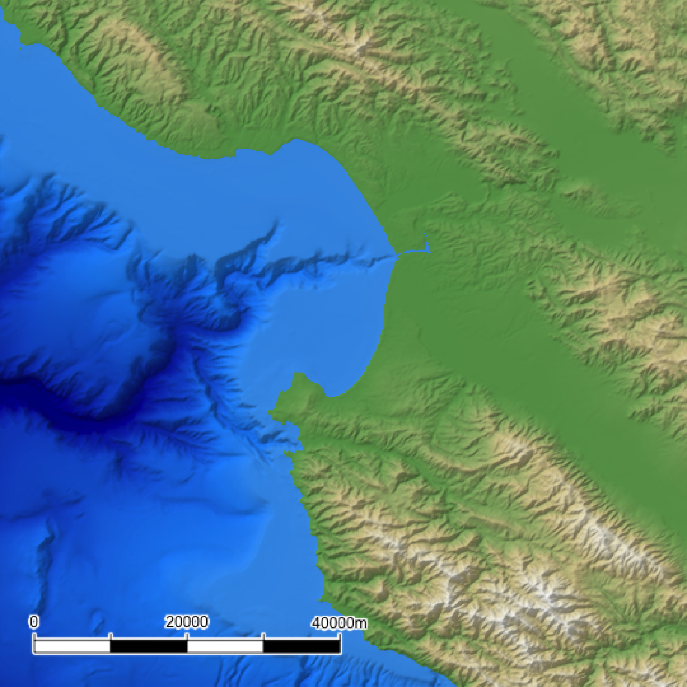
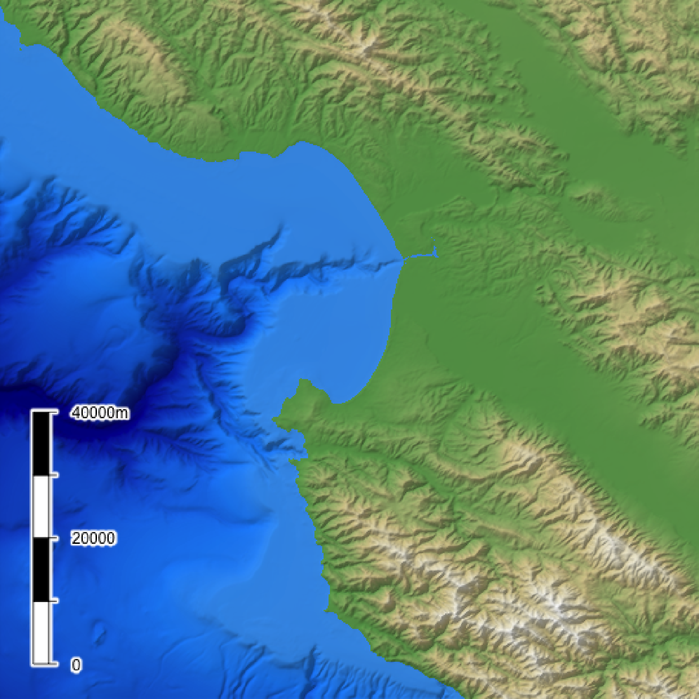
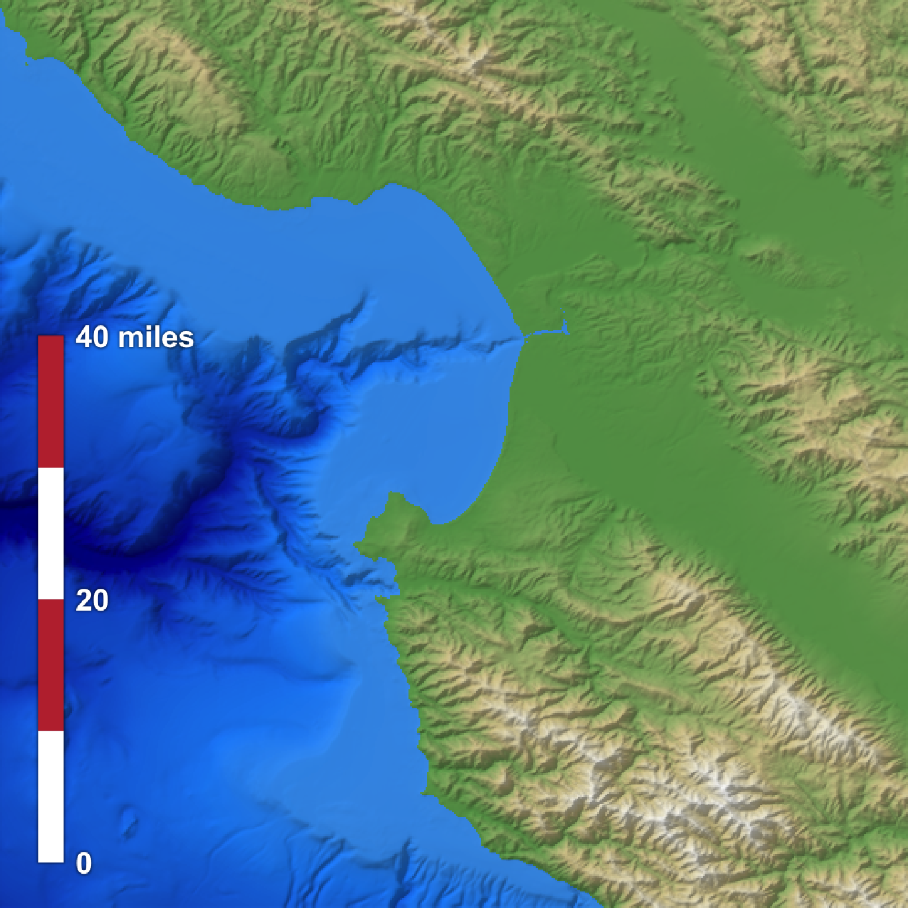

This function creates an overlay with a scale bar of a user-specified length. It uses the coordinates of the map (specified by passing an extent) and then creates a scale bar at a specified x/y proportion across the map. If the map is not projected (i.e. is in lat/long coordinates) this function will use the `geosphere` package to create a scale bar of the proper length.
generate_scalebar_overlay( extent, length, x = 0.05, y = 0.05, latlong = FALSE, thickness = NA, bearing = 90, unit = "m", flip_ticks = FALSE, labels = NA, text_size = 1, decimals = 0, text_offset = 1, adj = 0.5, heightmap = NULL, width = NA, height = NA, color1 = "white", color2 = "black", text_color = "black", font = 1, border_color = "black", tick_color = "black", border_width = 1, tick_width = 1, halo_color = NA, halo_expand = 1, halo_alpha = 1, halo_offset = c(0, 0), halo_blur = 1 )
| extent | A `raster::Extent` object with the bounding box for the height map used to generate the original map. If this is in lat/long coordinates, be sure to set `latlong = TRUE`. |
|---|---|
| length | The length of the scale bar, in `units`. This should match the units used on the map, unless `extent` uses lat/long coordinates. In that case, the distance should be in meters. |
| x | Default `0.05`. The x-coordinate of the bottom-left corner of the scale bar, as a proportion of the full map width. |
| y | Default `0.05`. The y-coordinate of the bottom-left corner of the scale bar, as a proportion of the full map height. |
| latlong | Default `FALSE`. Set to `TRUE` if the map is in lat/long coordinates to get an accurate scale bar (using distance calculated with the `geosphere` package). |
| thickness | Default `NA`, automatically computed as 1/20th the length of the scale bar. Width of the scale bar. |
| bearing | Default `90`, horizontal. Direction (measured from north) of the scale bar. |
| unit | Default `m`. Displayed unit on the scale bar. |
| flip_ticks | Default `FALSE`. Whether to flip the ticks to the other side of the scale bar. |
| labels | Default `NA`. Manually specify the three labels with a length-3 character vector. Use this if you want display units other than meters. |
| text_size | Default `1`. Text size. |
| decimals | Default `0`. Number of decimal places for scale bar labels. |
| text_offset | Default `1`. Amount of offset to apply to the text from the scale bar, as a multiple of `thickness`. |
| adj | Default `0.5`, centered. Text justification. `0` is left-justified, and `1` is right-justified. |
| heightmap | Default `NULL`. The original height map. Pass this in to extract the dimensions of the resulting RGB image array automatically. |
| width | Default `NA`. Width of the resulting image array. Default the same dimensions as height map. |
| height | Default `NA`. Width of the resulting image array. Default the same dimensions as height map. |
| color1 | Default `black`. Primary color of the scale bar. |
| color2 | Default `white`. Secondary color of the scale bar. |
| text_color | Default `black`. Text color. |
| font | Default `1`. An integer which specifies which font to use for text. If possible, device drivers arrange so that 1 corresponds to plain text (the default), 2 to bold face, 3 to italic and 4 to bold italic. |
| border_color | Default `black`. Border color of the scale bar. |
| tick_color | Default `black`. Tick color of the scale bar. |
| border_width | Default `1`. Width of the scale bar border. |
| tick_width | Default `1`. Width of the tick. |
| halo_color | Default `NA`, no halo. If a color is specified, the text label will be surrounded by a halo of this color. |
| halo_expand | Default `1`. Number of pixels to expand the halo. |
| halo_alpha | Default `1`. Transparency of the halo. |
| halo_offset | Default `c(0,0)`. Horizontal and vertical offset to apply to the halo, as a proportion of the full scene. |
| halo_blur | Default `1`. Amount of blur to apply to the halo. Values greater than `30` won't result in further blurring. |
Semi-transparent overlay with a scale bar.
# \donttest{ #Create the water palette water_palette = colorRampPalette(c("darkblue", "dodgerblue", "lightblue"))(200) bathy_hs = height_shade(montereybay, texture = water_palette) #Generate flat water heightmap mbay = montereybay mbay[mbay < 0] = 0 base_map = mbay %>% height_shade() %>% add_overlay(generate_altitude_overlay(bathy_hs, montereybay, 0, 0)) %>% add_shadow(lamb_shade(montereybay,zscale=50),0.3) #For convenience, the extent of the montereybay dataset is included as an attribute mb_extent = attr(montereybay, "extent") #Add a scalebar base_map %>% add_overlay(generate_scalebar_overlay(extent = mb_extent, length = 40000, heightmap = montereybay, latlong=TRUE)) %>% plot_map()#Change the text color base_map %>% add_overlay(generate_scalebar_overlay(extent = mb_extent, length = 40000, text_color = "white", heightmap = montereybay, latlong=TRUE)) %>% plot_map()#Change the length base_map %>% add_overlay(generate_scalebar_overlay(extent = mb_extent, length = 30000, text_color = "white", heightmap = montereybay, latlong=TRUE)) %>% plot_map()#Change the thickness (default is length/20) base_map %>% add_overlay(generate_scalebar_overlay(extent = mb_extent, length = 30000, text_color = "white", thickness = 30000/10, heightmap = montereybay, latlong=TRUE)) %>% plot_map()#Change the text offset (given in multiples of thickness) base_map %>% add_overlay(generate_scalebar_overlay(extent = mb_extent, length = 30000, text_color = "white", thickness = 30000/10, text_offset = 0.75, heightmap = montereybay, latlong=TRUE)) %>% plot_map()#Change the primary and secondary colors, along with the border and tick color base_map %>% add_overlay(generate_scalebar_overlay(extent = mb_extent, length = 30000, text_color = "white", border_color = "white", tick_color = "white", color1 = "darkolivegreen4", color2 = "burlywood3", heightmap = montereybay, latlong=TRUE)) %>% plot_map()#Add a halo base_map %>% add_overlay(generate_scalebar_overlay(extent = mb_extent, length = 40000, halo_color = "white", halo_expand = 1, heightmap = montereybay, latlong=TRUE)) %>% plot_map()#Change the orientation, position, text alignment, and flip the ticks to the other side base_map %>% add_overlay(generate_scalebar_overlay(extent = mb_extent, length = 40000, x = 0.07, bearing=0, adj = 0, flip_ticks = TRUE, halo_color = "white", halo_expand = 1.5, heightmap = montereybay, latlong=TRUE)) %>% plot_map()#64373.8 meters in 40 miles #Create custom labels, change font and text size, remove the border/ticks, and change the color #Here, we specify a width and height to double the resolution of the image (for sharper text) base_map %>% add_overlay(generate_scalebar_overlay(extent = mb_extent, length = 64373.8, x = 0.07, labels = c("0", "20", "40 miles"), thickness=2500, text_size=3, font = 2, text_offset = 0, text_color="white", color2="#bf323b", border_color=NA, tick_color="red", tick_width=0, bearing=0, adj = 0, flip_ticks = TRUE, halo_color="black", halo_blur=3, halo_alpha=0.5, width = ncol(montereybay)*2, height = nrow(montereybay)*2, latlong=TRUE), rescale_original=TRUE) %>% plot_map()# }